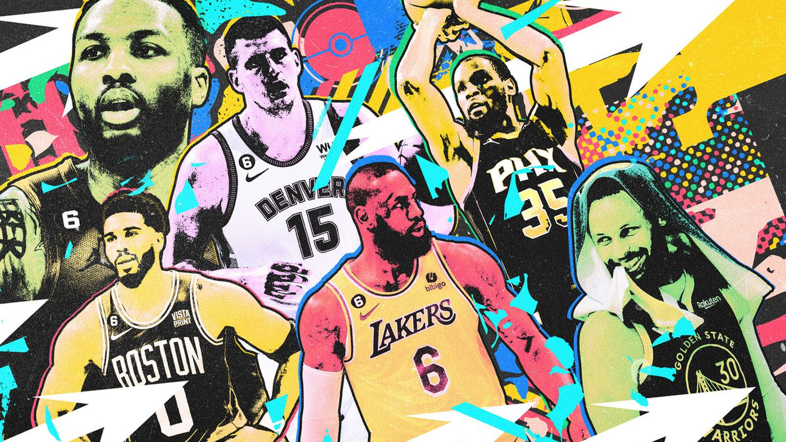

Judge Rules in Favor of 'NBA 2K' Creators in Case Brought by Tattoo Artists

Summary
The article talks about The tattoo artists whose designs appear in NBA 2K aren't paid as part of the licensing agreement between the company that produces the video game series and the NBA.
- What was digitized?
-
The details of the tattoos on a NBA player on NBA2k24
- What was the goal or purpose of digitizing this thing?
-
2K’s avatars are intended to resemble their real-life counterparts To do this you have to digitize the tattoos on a NBA player to display them on NBA2k24
- Is someone benefiting from this situation? If so, who?
-
Yes, players who are able to display their tattoos on NBA2k24 because Take-Two agreed to pay up to $1.1 billion over a seven-year period, this means that the 2k is benefiting money from this
- Is someone being harmed in this situation? If so, who?
-
No, Take-Two is not being harmed nor anyone else
- Are these impacts intended or unintended? How do you know?
-
The reason is uniteded because the reason for evenb adding tatoos is because they want to display their tattoos on NBA2k24 to make the game as realistic as possible
Return